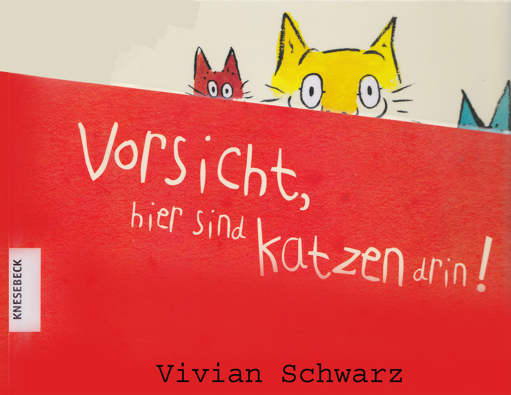
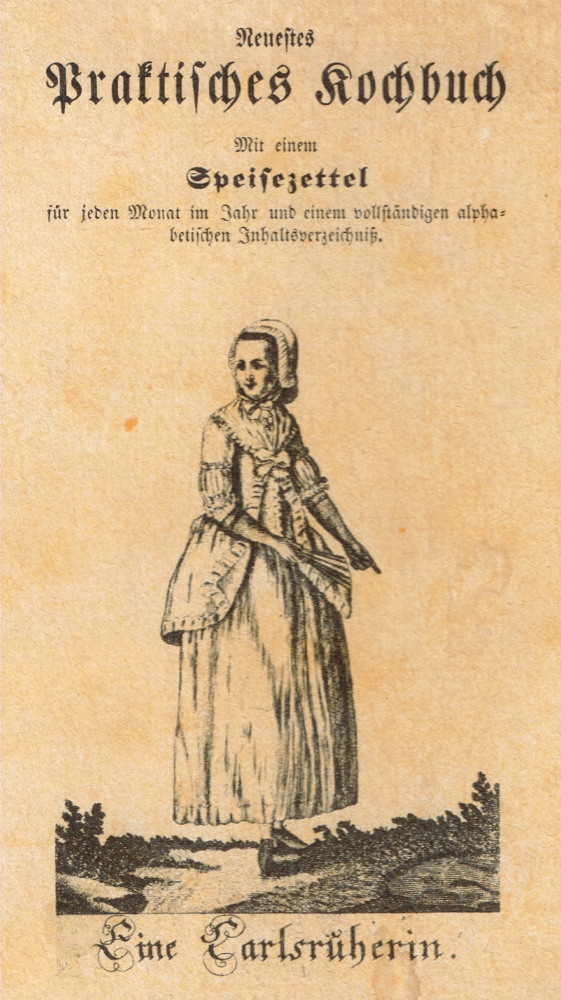

Wir laden ein zur Vorlesestunde (Kamishibai-Erzähltheater) für Kinder ab 3 Jahre aus dem Buch
„Vorsicht, hier sind Katzen drin“

In diesem Buch wohnen Katzen.
Drei sehr freundliche und neugierige Katzen.
Wer ihnen hilft, an das geliebte Wollknäuel und den leckeren Fisch zu kommen, darf sogar bei der
Kissenschlacht mitmachen.
Und wen sie besonders lieb haben, den lassen sie sogar mitkuscheln.
Ein Bilderbuch voller Überraschungen, zum Mitmachen und Entdecken.
Kommt am Dienstag, 25. April 2017 um 15 Uhr in die Bücherei Bilfingen
Kochbuchausstellung
„So hat Uroma gekocht“
Ab Mittwoch, 12.4.2017 Ausstellung in der Bücherei Bilfingen, Ebbstraße
während der Öffnungszeiten
Mittwochs + Freitags 15 – 18:30 Uhr,
Sonntags 10:30 – 12 Uhr
Was darf es sein?
- Gespicktes Kalbsherz
- Kaffee ohne Kaffeebohnen
- Kriegsschlagsahne
- Eier über Monate frisch halten
- Brühe von rothen Schnecken
- Froschschenkel-Suppe
- Gebackene Lerchen

Der aktuelle Jahresbericht für 2016 zum download.